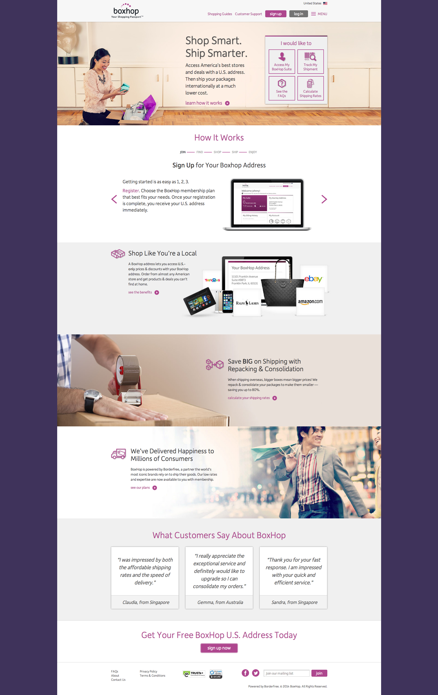

BoxHop Homepage Redesign
As a UX designer for e-commerce global shipping platform Boxhop, I helped redesign the homepage utilizing a new styleguide which I produced with our creative director.
As a UX designer for e-commerce global shipping platform Boxhop, I helped redesign the homepage utilizing a new styleguide which I produced with our creative director.
We analyzed existing homepage's data to realize the content on the landing page was not optimized. In addition, by looking at site data and working with our customer care team, we determined customer support was the most important element on our page.
The redesign simplified the navigation system and made "How It Works" a more promient section. Working closely with our marketing team and A/B testing the design options, we separated the content into sections and de-cluttered the front page, making it easy to find tracking tools, which were the number one used feature on the site.
The new design
